Based on your interest in creating a new beer label. We’ve evaluated over 2400 labels in this dataset, a third of them are classified as IPA or the similar APA. If Budweiser desires to cut into the craft brew market, this is an excellent place to start.
We will show that there is a statewide differences in median IBUs while ABVs are relatively close. We determined there relationship between ABV and IBUs and these can be used to categorize beer style. Finally, there are distinct differences in ABV and IBU between Standard American IPA’s, Double IPA’s, and APA’s.
Based on this information, it would be prudent for Budweiser’s brewers to stick to the range for American IPA’s shown in this dataset of an IBU between 60-75 to be within the range of 50% of American IPA’s on market. IPAs tend to be on the higher alcohol content, but there are ABVs within the American IPA range and the overall middle 50% of ABVs of 6.2% to 6.7%. Staying within this range will keep it distinct from the American Pale Ales while not straying far from the drinkability people look for in Budweiser.
In our review we found many beers were missing information on their IBU. This scale is not as widespread in America as it is in other countries. When Adolphus Busch started Budweiser, he was looking to make Americans love beer. Now Budweiser could bring this distinct flavor to a broader audience by inviting them to fall in love with the American IPA.
Here are the specific questions you requested, above each you will find a brief explanation of the code contained to generate the data.
These are the r libraries we used to evaluate the brewery and beer datasets
library(tidyverse)
library(ggthemes)
library(caret)
library(mvtnorm)
library(class)
library(e1071)
library(usmap)Included with this evaluation are the provided CSVs of Beer and Brewery data. Please leave them in the same folder when running this file.
See Appendix for Raw Datasets
#import data
beers <- read.csv("Beers.csv",header = TRUE)
breweries <- read.csv("Breweries.csv",header = TRUE)Here we are taking the brewery dataset and sorting by the state abbreviation. We have sorted it for easier readability and comparison starting with state with most breweries: Colorado. Every state is represented by at least one brewery in this list as well as the Distric of Columbia.
print(breweries %>% count(State,sort=TRUE), n = 51)## # A tibble: 51 x 2
## State n
## <fct> <int>
## 1 " CO" 47
## 2 " CA" 39
## 3 " MI" 32
## 4 " OR" 29
## 5 " TX" 28
## 6 " PA" 25
## 7 " MA" 23
## 8 " WA" 23
## 9 " IN" 22
## 10 " WI" 20
## 11 " NC" 19
## 12 " IL" 18
## 13 " NY" 16
## 14 " VA" 16
## 15 " FL" 15
## 16 " OH" 15
## 17 " MN" 12
## 18 " AZ" 11
## 19 " VT" 10
## 20 " ME" 9
## 21 " MO" 9
## 22 " MT" 9
## 23 " CT" 8
## 24 " AK" 7
## 25 " GA" 7
## 26 " MD" 7
## 27 " OK" 6
## 28 " IA" 5
## 29 " ID" 5
## 30 " LA" 5
## 31 " NE" 5
## 32 " RI" 5
## 33 " HI" 4
## 34 " KY" 4
## 35 " NM" 4
## 36 " SC" 4
## 37 " UT" 4
## 38 " WY" 4
## 39 " AL" 3
## 40 " KS" 3
## 41 " NH" 3
## 42 " NJ" 3
## 43 " TN" 3
## 44 " AR" 2
## 45 " DE" 2
## 46 " MS" 2
## 47 " NV" 2
## 48 " DC" 1
## 49 " ND" 1
## 50 " SD" 1
## 51 " WV" 1Additionally, here are those state counts displayed in map format to see concentrations of breweries to coastal regions: Pacific, Atlantic, and the great lakes. Colorado and Texas really stand out in the central region.
brew_count_by_state <- breweries %>% group_by(State) %>% tally()
brew_count_by_state$state <- trimws(as.character(brew_count_by_state$State))
brew_count_by_state$fips <- fips(brew_count_by_state$state)
attach(brew_count_by_state)
brew_count_fips <- brew_count_by_state[order(fips),]
detach(brew_count_by_state)
plot_usmap(data = brew_count_fips, values = "n", color = rgb(.2, .7, 1)) +
labs(title = "Breweries by State", subtitle = "Count of Breweries per state") +
scale_fill_continuous(low = "white", high = rgb(.2, .7, 1), name = "Breweries by State", label = scales::comma) + theme(legend.position = "right")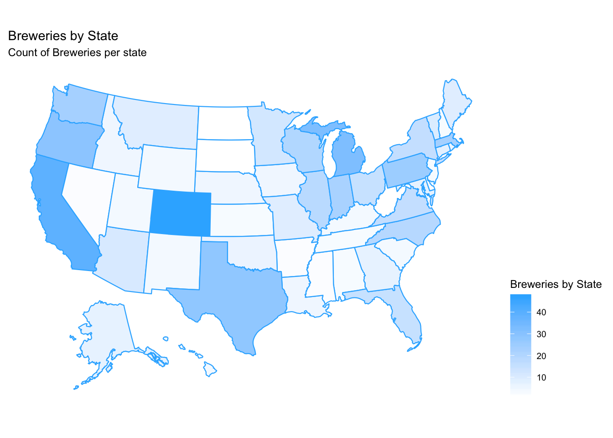
To bring these two datasets together we have joined them on the brewery’s id. The Name columns of each were transformed to Brewery_Name and Beer_Name for better readability. Below are the first and last 6 beers from the joined datasets.
#Merge the datasets
Beer2 <- merge(beers, breweries, by.x = "Brewery_id", by.y = "Brew_ID")
#Rename the Beer and Brewery Columns
Beer2 <- Beer2 %>%
rename(
Brewery_Name = Name.y,
Beer_Name = Name.x
)
#Display the first and last 6 rows
head(Beer2, 6)## Brewery_id Beer_Name Beer_ID ABV IBU
## 1 1 Get Together 2692 0.045 50
## 2 1 Maggie's Leap 2691 0.049 26
## 3 1 Wall's End 2690 0.048 19
## 4 1 Pumpion 2689 0.060 38
## 5 1 Stronghold 2688 0.060 25
## 6 1 Parapet ESB 2687 0.056 47
## Style Ounces Brewery_Name City
## 1 American IPA 16 NorthGate Brewing Minneapolis
## 2 Milk / Sweet Stout 16 NorthGate Brewing Minneapolis
## 3 English Brown Ale 16 NorthGate Brewing Minneapolis
## 4 Pumpkin Ale 16 NorthGate Brewing Minneapolis
## 5 American Porter 16 NorthGate Brewing Minneapolis
## 6 Extra Special / Strong Bitter (ESB) 16 NorthGate Brewing Minneapolis
## State
## 1 MN
## 2 MN
## 3 MN
## 4 MN
## 5 MN
## 6 MNtail(Beer2, 6)## Brewery_id Beer_Name Beer_ID ABV IBU
## 2405 556 Pilsner Ukiah 98 0.055 NA
## 2406 557 Heinnieweisse Weissebier 52 0.049 NA
## 2407 557 Snapperhead IPA 51 0.068 NA
## 2408 557 Moo Thunder Stout 50 0.049 NA
## 2409 557 Porkslap Pale Ale 49 0.043 NA
## 2410 558 Urban Wilderness Pale Ale 30 0.049 NA
## Style Ounces Brewery_Name City
## 2405 German Pilsener 12 Ukiah Brewing Company Ukiah
## 2406 Hefeweizen 12 Butternuts Beer and Ale Garrattsville
## 2407 American IPA 12 Butternuts Beer and Ale Garrattsville
## 2408 Milk / Sweet Stout 12 Butternuts Beer and Ale Garrattsville
## 2409 American Pale Ale (APA) 12 Butternuts Beer and Ale Garrattsville
## 2410 English Pale Ale 12 Sleeping Lady Brewing Company Anchorage
## State
## 2405 CA
## 2406 NY
## 2407 NY
## 2408 NY
## 2409 NY
## 2410 AKThere are a few ways we could go about dealing with these; the best way to glean reliable information from any statistics related to the data would be to ignore entries with missing values for the variable(s) being examined, as using any input (like say, a mean) in place of an unknown value is very likely to misrepresent the true nature of the data.
In this case, IBU is a good example of the potential perils of trying to impute missing values because it varies greatly between beers regardless of style. The IBU measurement is going to be impacted heavily by the flavor/taste a brewer is going for, and breweries have little practical interest in producing beers that aren’t distinguishably different than those they already have, especially if they will produce multiple iterations of a certain style. The best course of action is probably to exclude beers missing the IBU value when examining IBU despite the misfortune that this excludes over 1000 beers (40% of the beers).
For similar reasons, beers missing ABV should also be excluded from analyses involving ABV. There is less reason for concern with these exclusions due to the relatively small number of beers missing this information.
#Find out which columns have missing values
names(which(colSums(is.na(Beer2))>0))## [1] "ABV" "IBU"#Count the missing values in each column
paste('ABV Missing - ',sum(is.na(Beer2$ABV)))## [1] "ABV Missing - 62"paste('IBU Missing - ', sum(is.na(Beer2$IBU)))## [1] "IBU Missing - 1005"paste('Style Missing - ', sum(is.na(Beer2$Style)))## [1] "Style Missing - 0"We took the median ABV and IBU per state, removing respective missing values. The median ABVs per state are relatively close to one another between 0.04 and .0625. Utah stands out with a very low median of 0.04 ABV. This is likely due to a law capping the alcohol content at 4%. Considering that there are not laws around the IBU, the median IBUs are much more diverse ranging from around 20 - 60 IBUs
See Appendix for full ordered lists of
Meds <- Beer2 %>%
group_by(State) %>%
summarize(
Median_ABV = median(ABV, na.rm = TRUE),
Median_IBU = median(IBU, na.rm = TRUE)
)Meds %>% ggplot(aes(x=reorder(State,Median_ABV), y=Median_ABV,fill = Meds$Median_ABV)) + scale_colour_gradient()+ geom_col(show.legend = FALSE) + ggtitle("Median ABV by State") + xlab("State") + ylab("Median ABV") + theme(axis.text.x = element_text(angle=90, size=8, vjust = .5))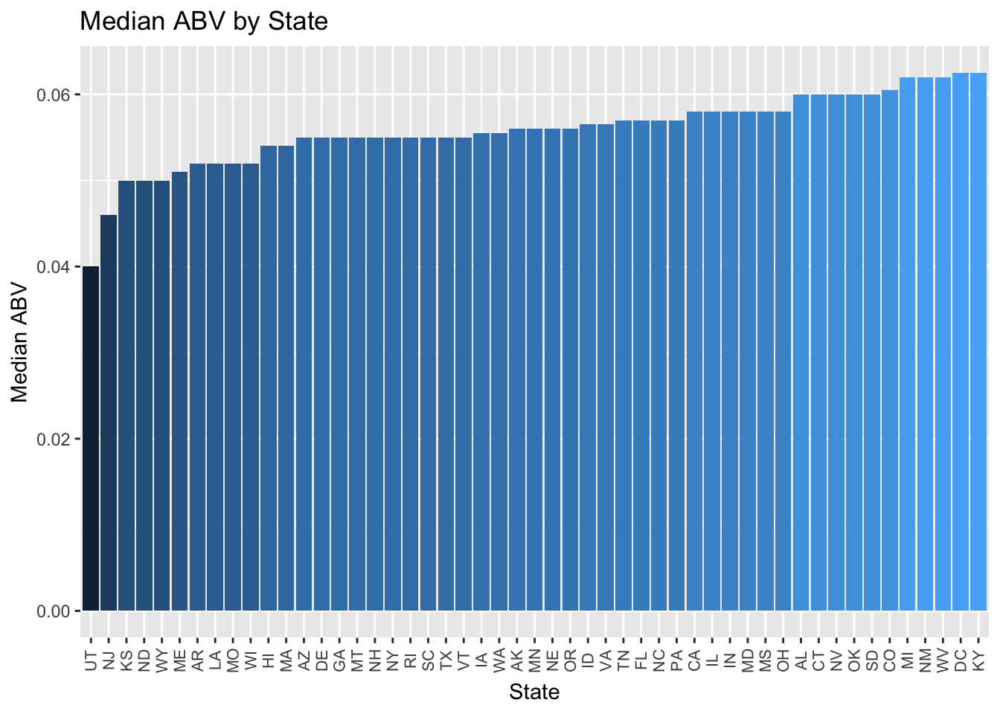
Meds %>% ggplot(aes(x=reorder(State,Median_IBU), y=Median_IBU,fill = Meds$Median_IBU)) + scale_colour_gradient()+ geom_col(show.legend = FALSE) + ggtitle("Median IBU by State") + xlab("State") + ylab("Median IBU") + theme(axis.text.x = element_text(angle=90, size=8, vjust = .5))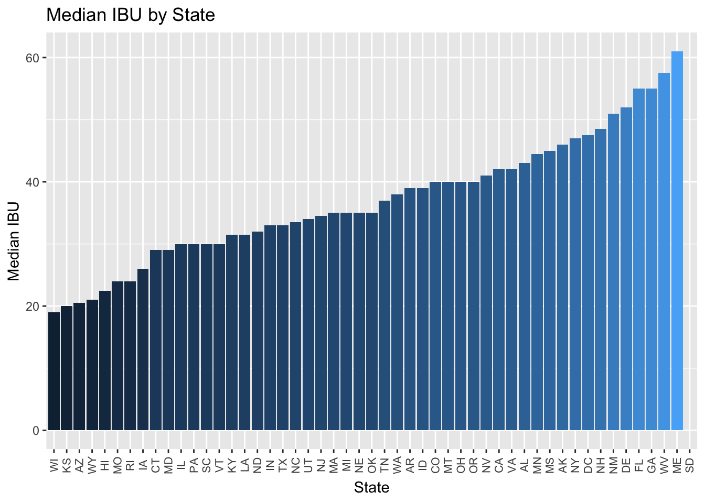
With these Medians, we have charted the states to better view the distributions geographically. South Dakota is missing from the IBU map. Given that 40% of the beers didn’t have IBU values and many states only had one brewery, like South Dakota, it isn’t surprising there is a state missing from this map.
Meds$fips <- fips(trimws(as.character(Meds$State)))
plot_usmap(data = Meds, values = "Median_IBU", color = rgb(.2, .7, 1)) +
labs(title = "Median IBU by State", subtitle = "International Bitterness Units") +
scale_fill_continuous(low = "white", high = rgb(.2, .7, 1), name = "IBU", label = scales::comma) + theme(legend.position = "right")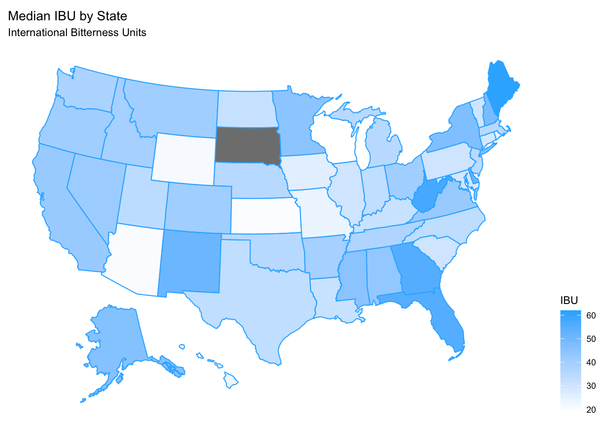
plot_usmap(data = Meds, values = "Median_ABV", color = rgb(.2, .7, 1)) +
labs(title = "Median ABV by State", subtitle = "Alcohol by Volume") +
scale_fill_continuous(low = "white", high = rgb(.2, .7, 1), name = "ABV", label = scales::comma) + theme(legend.position = "right")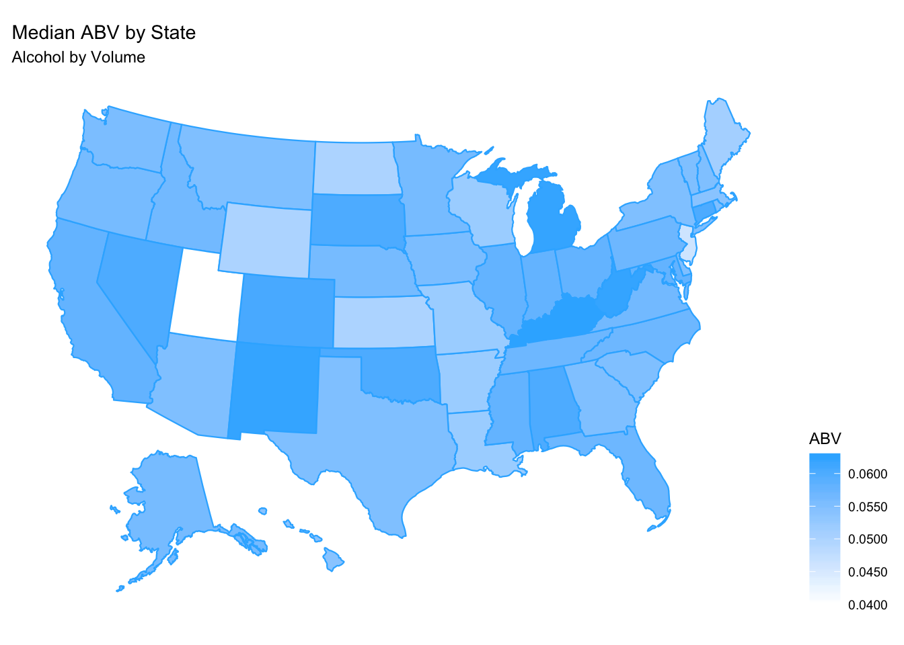
Colorado beer Lee Hill Series Vol. 5 Belgian Quadrupel Ale ist the most alcoholic at with 0.128 ABV ### Highest IBU: Oregon beer Bitter Bitch Imperial IPA is the bitterest beer at 138 IBU ### Highest Median ABV: Kentucky and the District of Columbia both having a median ABV of 0.0625 ### Highest Median IBU: Maine’s beer has the highest median bitterness with 61 IBU
#State in which the beer with the single highest ABV resides
maxABV = max(Beer2$ABV, na.rm = TRUE)
topABV = Beer2$`State`[which(Beer2$ABV==maxABV)]
paste('State with the highest ABV: ', topABV, ' - ', maxABV, 'ABV')## [1] "State with the highest ABV: CO - 0.128 ABV"#State in which the beer with the single highest IBU resides
maxIBU = max(Beer2$IBU, na.rm = TRUE)
topIBU = Beer2$`State`[which(Beer2$IBU==maxIBU)]
paste('State with the highest ABV: ', topIBU, ' - ', maxIBU, 'IBU')## [1] "State with the highest ABV: OR - 138 IBU"#States with the highest median ABV
maxMedABV = max(Meds$Median_ABV, na.rm = TRUE)
topMedABV = Meds$`State`[which(Meds$Median_ABV==maxMedABV)]
paste('States with the highest median ABV (tie): ')## [1] "States with the highest median ABV (tie): "paste(topMedABV, ' - ', maxMedABV, 'ABV')## [1] " DC - 0.0625 ABV" " KY - 0.0625 ABV"#States with the highest median IBU
maxMedIBU = max(Meds$Median_IBU, na.rm = TRUE)
topMedIBU = Meds$`State`[which(Meds$Median_IBU== maxMedIBU)]
paste('States with the highest median IBU: ', topMedIBU, ' - ', maxMedIBU, 'IBU')## [1] "States with the highest median IBU: ME - 61 IBU"Comment on the summary statistics and distribution of the ABV variable. The distribution of ABV of all the beers in the dataset appears fairly normal to slightly right-skewed.The median ABV is about 5.6% and 75% of the data is contained within the range of 5% to 6.7% ABV, indicating that most beers tend to be close to the median ABV. The maximum ABV of 12.8% is a full five standard deviations from the mean of about 6%, and the minimum ABV of 1% is over 4 standard deviations from the mean. Based this information and visual assessment of the histogram, beers with ABV this high or low appear to be rare outliers.
summary(Beer2$ABV)## Min. 1st Qu. Median Mean 3rd Qu. Max. NA's
## 0.00100 0.05000 0.05600 0.05977 0.06700 0.12800 62sd(Beer2$ABV, na.rm = TRUE) #Standard deviation## [1] 0.01354173hist(Beer2$ABV, breaks = 20, main = "Distribution of Alcohol Content", xlab = "Alcohol By Volume")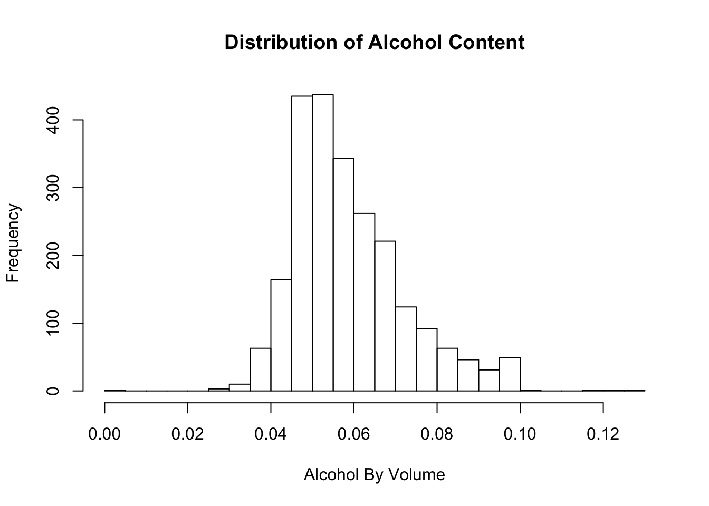
Based on a scatter plot of ABV vs IBU, there does appear to be evidence of a moderate positive correlation. The ABV looks like it trends upward as IBU increases. The calculated correlation coefficient of .67 supports this.
#Scatter plot with linear model
Beer2 %>% ggplot(aes(x=IBU, y=ABV, fill = ABV)) + scale_colour_gradient()+ geom_point() + geom_smooth(method = lm) + ggtitle("IBU vs ABV") + xlab("IBU") + ylab("ABV")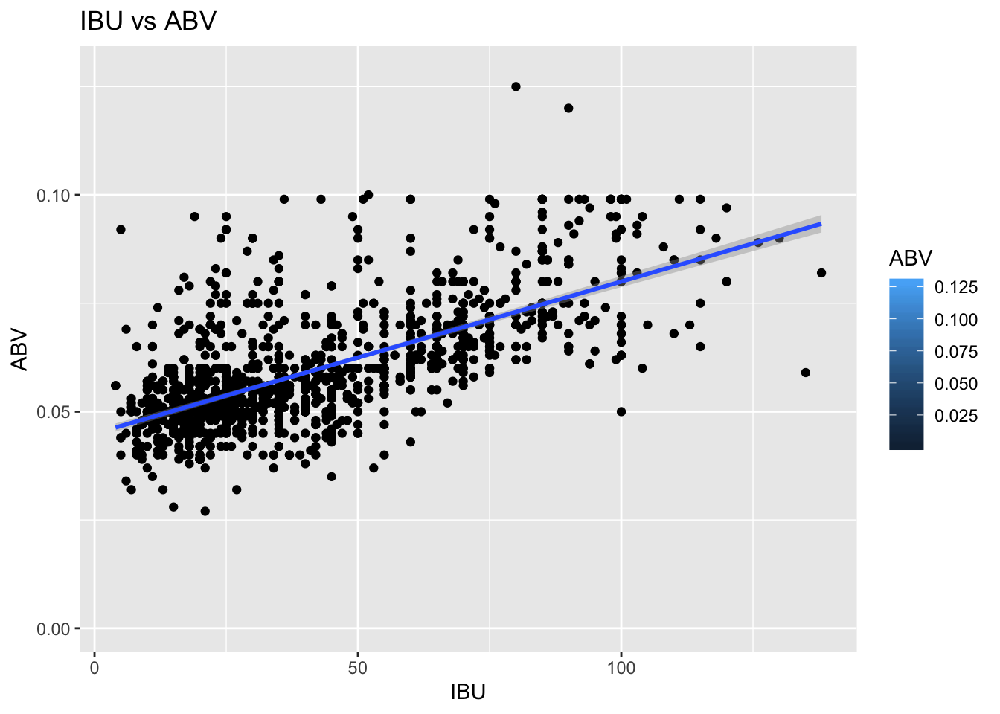
#Correlation of IBU and ABV
Beer3 <- Beer2 %>% filter(!is.na(Beer2$ABV))
Beer3 <- Beer3 %>% filter(!is.na(Beer3$IBU))
cor(x=Beer3$ABV, y=Beer3$IBU)## [1] 0.6706215Given the scatterplot above, we’d like to know if ther is enough of a relationship between IBU and ABV to categorize a beer as either an IPA or an Ale knowing only these two numbers. We will use the K - Nearest Neighbors (KNN) test. This model will use K number of beers closest by distance (as you’d see on a scatterplot) to estimate what kind of beer it is.
To compare IPAs to other Ales, we broke up the beers into sets based on their beer type containing IPA or just Ale.
See Appendix for Full list of Beer Types
First we checked for the best K value to use to train the KNN. We split the dataset in half checking K values 1 to 80 for accuracy. For each K value we took the mean accuracy of 50 runs for comparison.
#Identify IPAs, Non-IPA Ales, or other styles.
#All IPAs have "IPA" somehwere in the style name, so this can be used to identify IPA vs not IPA.
Beer3$Category[grepl("IPA", Beer3$Style)] <- "IPA"
Beer3$Category[is.na(Beer3$Category) & grepl("Ale", Beer3$Style)] <- "Non-IPA Ale"
Beer3$Category[is.na(Beer3$Category)] <- "Other"
Beer4 <- Beer3 %>% filter(Category == "IPA" | Category == "Non-IPA Ale")
#Identify the best k
#Set Split percentages for train and test sets
set.seed(10)
splitPerc = .5
#loop through values of k to find best model on 100 generated train/test combos
iterations = 50
numks = 80
masterAcc = matrix(nrow = iterations, ncol = numks)
for(j in 1:iterations)
{
accs = data.frame(accuracy = numeric(80), k = numeric(80))
trainIndices = sample(1:dim(Beer4)[1],round(splitPerc * dim(Beer4)[1]))
train = Beer4[trainIndices,]
test = Beer4[-trainIndices,]
for(i in 1:numks)
{
classifications = knn(train[,c(4,5)],test[,c(4,5)],train$Category, prob = TRUE, k = i)
table(classifications,test$Category)
CM = confusionMatrix(table(classifications,test$Category))
masterAcc[j,i] = CM$overall[1]
}
}Based on the graph, you can see there is a high spike in accuracy at k=5 and it levels out after 30. Our model will use the closest 5 beers to estimate what category it should fall into.
MeanAcc = colMeans(masterAcc)
#plot k vs accuracy and identify k with highest accuracy
plot(seq(1,numks,1),MeanAcc, type = "l", main="Accuracy of KNN model vs K value")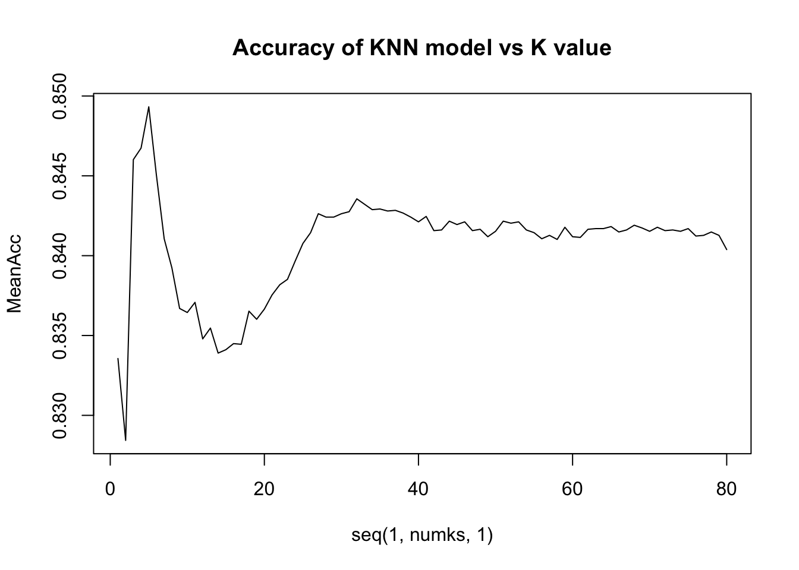
paste("Highest Accuraccy K Value is ", which.max(MeanAcc))## [1] "Highest Accuraccy K Value is 5"Using a KNN model with k=5, we could categorize beers into IPAs or Non-IPA Ales with about 87% accuracy using only IBU and ABV. This indicates that on average, there is a clear enough distinction between IPAs and other Ales in their combination of ABV and IBU to be able to reasonably identify an IPA from a different Ale based on these variables alone.
#knn classification using the tuned value of k
set.seed(10)
trainIndices = sample(seq(1:length(Beer4$ABV)),round(.7*length(Beer4$ABV)))
trainBeer = Beer4[trainIndices,]
testBeer = Beer4[-trainIndices,]
classif <- knn(trainBeer[,4:5],testBeer[,4:5],trainBeer$Category, prob=TRUE, k=5)
confusionMatrix(table(classif,testBeer$Category))## Confusion Matrix and Statistics
##
##
## classif IPA Non-IPA Ale
## IPA 104 17
## Non-IPA Ale 21 141
##
## Accuracy : 0.8657
## 95% CI : (0.8204, 0.9032)
## No Information Rate : 0.5583
## P-Value [Acc > NIR] : <2e-16
##
## Kappa : 0.7268
##
## Mcnemar's Test P-Value : 0.6265
##
## Sensitivity : 0.8320
## Specificity : 0.8924
## Pos Pred Value : 0.8595
## Neg Pred Value : 0.8704
## Prevalence : 0.4417
## Detection Rate : 0.3675
## Detection Prevalence : 0.4276
## Balanced Accuracy : 0.8622
##
## 'Positive' Class : IPA
## Beer4 %>%
ggplot(aes(x = IBU, y=ABV, color=Category)) + geom_point() + ggtitle("IBU vs. ABV for IPAs and Other Ales") +theme_stata()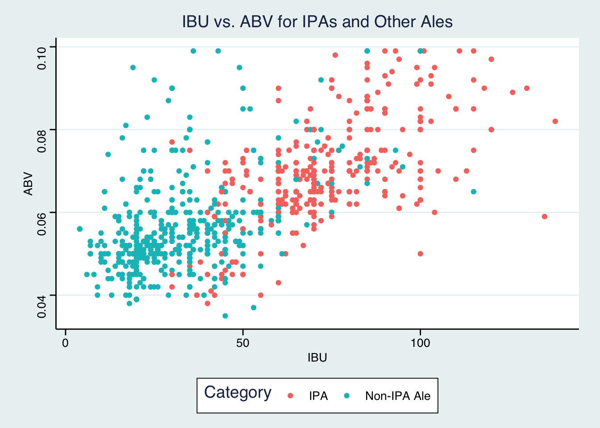
With the younger generation quickly ditching ubiquitous light beers for bolder options from the craft beer market, it is time to evolve by attempting to add more inimitable options to our lineup of beer labels. The booming resurgence of craft beer brewing has fostered unbridled experimentation in pursuit of finding unique formulas that can distinguish a brewer amidst his many peers. The lines separating the classification of beer styles are becoming blurrier and the opportunity to discover a new flavor that entices the common imbiber is riper than ever.
The India Pale Ale is the most prevalent and still one of the fastest growing craft beer styles in America. Of the 2400 labels in this dataset, a third of them are classified as IPA or the similar APA. If Budweiser desires to cut into the craft brew market, this is an excellent place to start.
The marketing and development team for Budweiser has proposed that a new label be introduced to the Budweiser Lineup - The Bud IPA. The team wants to label the beer with IPA because of its popular namesake in the craft beer market, but is interested to know how much room for experimentation they have when it comes to IBU and ABV while still being able to keep the simple “Bud IPA” label.
There are traditional differences that have culminated in industry defined standards for what makes a beer an Indian Pale Ale vs an American Pale Ale. But as IPAs, their siblings, and cousins dominate the craft beer market, many are suggesting there isn’t really any difference between them anymore. Could this mean we have free reign to develop a unique brew that could fall anywhere in the range of ABV and IBU and label it as the all-encompassing “IPA”? Answering these questions could open the door to understanding just how ambitious the formulation for this new label could be.
We can observe visually that there appears to be distinct differences in Bitterness and ABV for the 3 largest groups among IPAs and APAs.
# Boxplots of IBU for 3 different PAs
# Pare down data to just 3 groups of interest
IPAtest <- Beer3 %>% filter(Beer3$Style == "American IPA" | Beer3$Style == "American Double / Imperial IPA" | Beer3$Style == "American Pale Ale (APA)")
IPAtest %>%
ggplot(aes(x = Style, y=IBU, fill=Style)) + geom_boxplot(color="black", show.legend = FALSE) + ggtitle("Bitterness Distribution of Pale Ales") +theme_stata()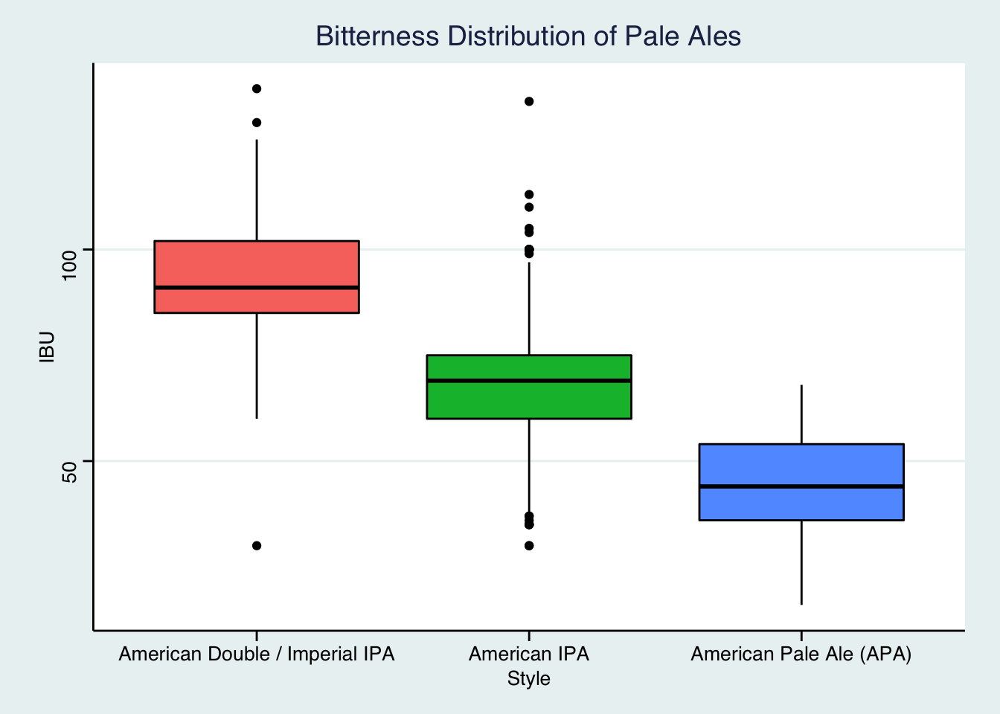
# Boxplots of ABV for 3 different PAs
IPAtest %>%
ggplot(aes(x = Style, y=ABV, fill=Style)) + geom_boxplot(color="black", show.legend = FALSE) + ggtitle("Alcohol by Volume Distribution of Pale Ales") +theme_stata()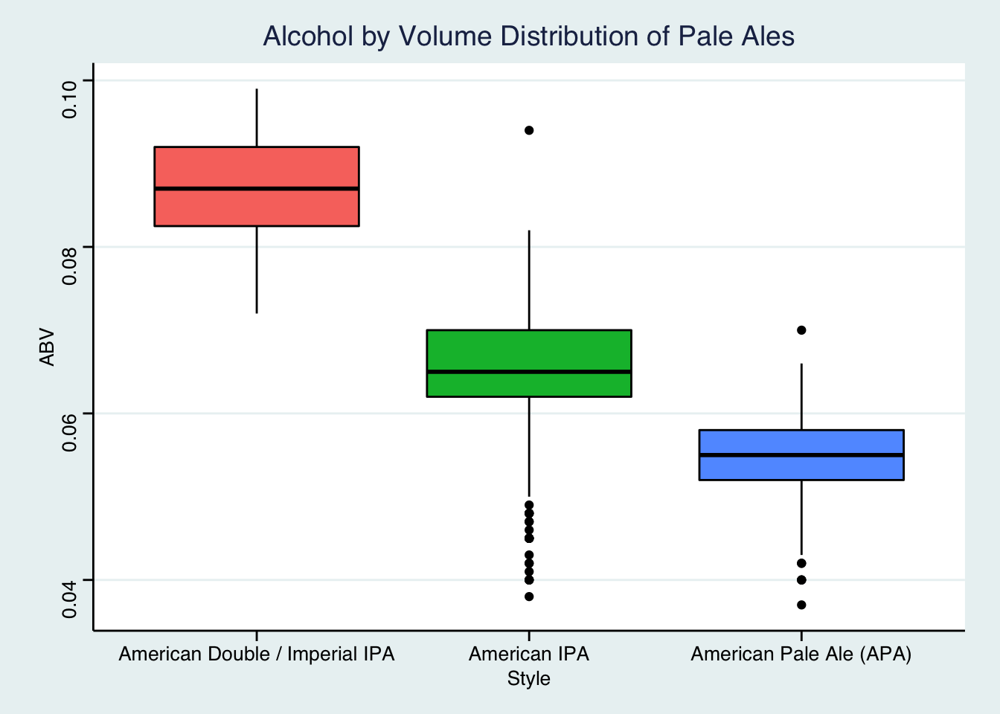
#Relationship of ABV and IBU for the 3 groups
IPAtest %>%
ggplot(aes(x = IBU, y=ABV, color=Style)) + geom_point() + ggtitle("Alcohol by Volume Distribution of Pale Ales") +theme_stata()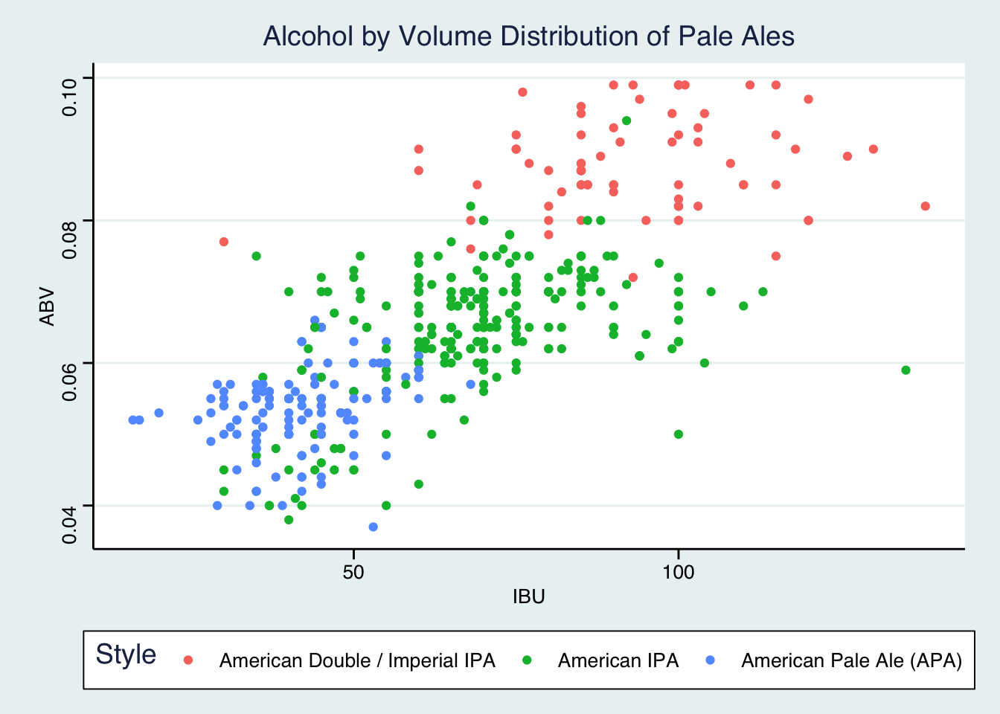
All of the plots show distinct separate groups for the 3 styles for both ABV and IBU. We can confirm whether or not there are any significant differences between the groups with an ANOVA.
See Appendix for assumption checks to confirm ANOVA can be performed IBU ANOVA Checks ABV ANOVA Checks
#Run ANOVA on IBU for the 3 groups
IPAtest_IBU <- aov(IBU ~ Style, data=IPAtest)
summary(IPAtest_IBU)## Df Sum Sq Mean Sq F value Pr(>F)
## Style 2 123758 61879 270.6 <2e-16 ***
## Residuals 526 120301 229
## ---
## Signif. codes: 0 '***' 0.001 '**' 0.01 '*' 0.05 '.' 0.1 ' ' 1#Run ANOVA on ABV for the 3 groups
IPAtest_ABV <- aov(ABV ~ Style, data=IPAtest)
summary(IPAtest_ABV)## Df Sum Sq Mean Sq F value Pr(>F)
## Style 2 0.05399 2.7e-02 460.7 <2e-16 ***
## Residuals 526 0.03082 5.9e-05
## ---
## Signif. codes: 0 '***' 0.001 '**' 0.01 '*' 0.05 '.' 0.1 ' ' 1The F statistics and corresponding small p values confirm that there is significant evidence of at least one difference between the different groups for both IBU and ABV.
To check which of three styles were different from each other, we ran hypothesis tests on the three combinations using Tukey-Kramer adjusted p-values.
#Tukey-Kramer adjusted p values and confidence intervals for IBU differences between groups
TukeyHSD(IPAtest_IBU)## Tukey multiple comparisons of means
## 95% family-wise confidence level
##
## Fit: aov(formula = IBU ~ Style, data = IPAtest)
##
## $Style
## diff lwr
## American IPA-American Double / Imperial IPA -25.68545 -30.27274
## American Pale Ale (APA)-American Double / Imperial IPA -48.37882 -53.38917
## American Pale Ale (APA)-American IPA -22.69338 -26.22257
## upr p adj
## American IPA-American Double / Imperial IPA -21.09816 0
## American Pale Ale (APA)-American Double / Imperial IPA -43.36848 0
## American Pale Ale (APA)-American IPA -19.16418 0#Tukey-Kramer adjusted p values and confidence intervals for ABV differences between groups
TukeyHSD(IPAtest_ABV)## Tukey multiple comparisons of means
## 95% family-wise confidence level
##
## Fit: aov(formula = ABV ~ Style, data = IPAtest)
##
## $Style
## diff lwr
## American IPA-American Double / Imperial IPA -0.022886024 -0.02520800
## American Pale Ale (APA)-American Double / Imperial IPA -0.032719477 -0.03525559
## American Pale Ale (APA)-American IPA -0.009833453 -0.01161984
## upr p adj
## American IPA-American Double / Imperial IPA -0.020564049 0
## American Pale Ale (APA)-American Double / Imperial IPA -0.030183364 0
## American Pale Ale (APA)-American IPA -0.008047062 0These tests provide overwhelming evidence (p values are essentially zero) of distinct differences in IBU and ABV between Standard American IPA’s, Double IPA’s, and APA’s. Based on this information, it would be prudent for Budweiser’s brewers to stick to the range for American IPA’s shown in this dataset of an IBU between 60-75 to be within the range of 50% of American IPA’s on market. IPAs tend to be on the higher alcohol content, but there are ABVs within the American IPA range and the overall middle 50% of ABVs of 6.2% to 6.7%. Staying within this range will keep it distinct from the American Pale Ales while not straying far from the drinkability people look for in Budweiser.
print("American IPA beer Middle 50% distribution of IBU")## [1] "American IPA beer Middle 50% distribution of IBU"IBUsummary = summary(filter(.data=IPAtest, Style == 'American IPA')$IBU)
paste("[",IBUsummary[2], ",", IBUsummary[5],"]")## [1] "[ 60 , 75 ]"print("American IPA beer Middle 50% distribution of ABV ")## [1] "American IPA beer Middle 50% distribution of ABV "ABVsummary = summary(filter(.data=IPAtest, Style == 'American IPA')$ABV)
paste("[",ABVsummary[2], ",", ABVsummary[5],"]")## [1] "[ 0.062 , 0.07 ]"print("Overall American Beer Middle 50% distribution ABV")## [1] "Overall American Beer Middle 50% distribution ABV"overallSummary = summary(Beer2$ABV)
paste("[",overallSummary[2],",",overallSummary[5],"]")## [1] "[ 0.05 , 0.067 ]"In our review we found many beers were missing information on their IBU. This scale is not as widespread in America as it is in other countries. When Adolphus Busch started Budweiser, he was looking to make Americans love beer. Now Budweiser could bring this distinct flavor to a broader audience by inviting them to fall in love with the American IPA.
breweries## Brew_ID Name City State
## 1 1 NorthGate Brewing Minneapolis MN
## 2 2 Against the Grain Brewery Louisville KY
## 3 3 Jack's Abby Craft Lagers Framingham MA
## 4 4 Mike Hess Brewing Company San Diego CA
## 5 5 Fort Point Beer Company San Francisco CA
## 6 6 COAST Brewing Company Charleston SC
## 7 7 Great Divide Brewing Company Denver CO
## 8 8 Tapistry Brewing Bridgman MI
## 9 9 Big Lake Brewing Holland MI
## 10 10 The Mitten Brewing Company Grand Rapids MI
## 11 11 Brewery Vivant Grand Rapids MI
## 12 12 Petoskey Brewing Petoskey MI
## 13 13 Blackrocks Brewery Marquette MI
## 14 14 Perrin Brewing Company Comstock Park MI
## 15 15 Witch's Hat Brewing Company South Lyon MI
## 16 16 Founders Brewing Company Grand Rapids MI
## 17 17 Flat 12 Bierwerks Indianapolis IN
## 18 18 Tin Man Brewing Company Evansville IN
## 19 19 Black Acre Brewing Co. Indianapolis IN
## 20 20 Brew Link Brewing Plainfield IN
## 21 21 Bare Hands Brewery Granger IN
## 22 22 Three Pints Brewing Martinsville IN
## 23 23 Four Fathers Brewing Valparaiso IN
## 24 24 Indiana City Brewing Indianapolis IN
## 25 25 Burn 'Em Brewing Michigan City IN
## 26 26 Sun King Brewing Company Indianapolis IN
## 27 27 Evil Czech Brewery Mishawaka IN
## 28 28 450 North Brewing Company Columbus IN
## 29 29 Taxman Brewing Company Bargersville IN
## 30 30 Cedar Creek Brewery Seven Points TX
## 31 31 SanTan Brewing Company Chandler AZ
## 32 32 Boulevard Brewing Company Kansas City MO
## 33 33 James Page Brewing Company Stevens Point WI
## 34 34 The Dudes' Brewing Company Torrance CA
## 35 35 Ballast Point Brewing Company San Diego CA
## 36 36 Anchor Brewing Company San Francisco CA
## 37 37 Figueroa Mountain Brewing Company Buellton CA
## 38 38 Avery Brewing Company Boulder CO
## 39 39 Twisted X Brewing Company Dripping Springs TX
## 40 40 Gonzo's BiggDogg Brewing Kalamazoo MI
## 41 41 Big Muddy Brewing Murphysboro IL
## 42 42 Lost Nation Brewing East Fairfield VT
## 43 43 Rising Tide Brewing Company Portland ME
## 44 44 Rivertowne Brewing Company Export PA
## 45 45 Revolution Brewing Company Chicago IL
## 46 46 Tallgrass Brewing Company Manhattan KS
## 47 47 Sixpoint Craft Ales Brooklyn NY
## 48 48 White Birch Brewing Hooksett NH
## 49 49 Firestone Walker Brewing Company Paso Robles CA
## 50 50 SweetWater Brewing Company Atlanta GA
## 51 51 Flying Mouse Brewery Troutville VA
## 52 52 Upslope Brewing Company Boulder CO
## 53 53 Pipeworks Brewing Company Chicago IL
## 54 54 Bent Brewstillery Roseville MN
## 55 55 Flesk Brewing Company Lombard IL
## 56 56 Pollyanna Brewing Company Lemont IL
## 57 57 BuckleDown Brewing Lyons IL
## 58 58 Destihl Brewery Bloomington IL
## 59 59 Summit Brewing Company St. Paul MN
## 60 60 Latitude 42 Brewing Company Portage MI
## 61 61 4 Hands Brewing Company Saint Louis MO
## 62 62 Surly Brewing Company Brooklyn Center MN
## 63 63 Against The Grain Brewery Louisville KY
## 64 64 Crazy Mountain Brewing Company Edwards CO
## 65 65 SlapShot Brewing Company Chicago IL
## 66 66 Mikerphone Brewing Chicago IL
## 67 67 Freetail Brewing Company San Antonio TX
## 68 68 3 Daughters Brewing St Petersburg FL
## 69 69 Red Shedman Farm Brewery and Hop... Mt. Airy MD
## 70 70 Appalachian Mountain Brewery Boone NC
## 71 71 Birdsong Brewing Company Charlotte NC
## 72 72 Union Craft Brewing Baltimore MD
## 73 73 Atwater Brewery Detroit MI
## 74 74 Ale Asylum Madison WI
## 75 75 Two Brothers Brewing Company Warrenville IL
## 76 76 Bent Paddle Brewing Company Duluth MN
## 77 77 Bell's Brewery Kalamazoo MI
## 78 78 Blue Owl Brewing Austin TX
## 79 79 Speakasy Ales & Lagers San Francisco CA
## 80 80 Black Tooth Brewing Company Sheridan WY
## 81 81 Hopworks Urban Brewery Portland OR
## 82 82 Epic Brewing Denver CO
## 83 83 New Belgium Brewing Company Fort Collins CO
## 84 84 Sierra Nevada Brewing Company Chico CA
## 85 85 Keweenaw Brewing Company Houghton MI
## 86 86 Brewery Terra Firma Traverse City MI
## 87 87 Grey Sail Brewing Company Westerly RI
## 88 88 Kirkwood Station Brewing Company Kirkwood MO
## 89 89 Goose Island Brewing Company Chicago IL
## 90 90 Broad Brook Brewing LLC East Windsor CT
## 91 91 The Lion Brewery Wilkes-Barre PA
## 92 92 Madtree Brewing Company Cincinnati OH
## 93 93 Jackie O's Pub & Brewery Athens OH
## 94 94 Rhinegeist Brewery Cincinnati OH
## 95 95 Warped Wing Brewing Company Dayton OH
## 96 96 Blackrocks Brewery Marquette MA
## 97 97 Catawba Valley Brewing Company Morganton NC
## 98 98 Tröegs Brewing Company Hershey PA
## 99 99 Mission Brewery San Diego CA
## 100 100 Christian Moerlein Brewing Company Cincinnati OH
## 101 101 West Sixth Brewing Lexington KY
## 102 102 Coastal Extreme Brewing Company Newport RI
## 103 103 King Street Brewing Company Anchorage AK
## 104 104 Beer Works Brewery Lowell MA
## 105 105 Lone Tree Brewing Company Lone Tree CO
## 106 106 Four String Brewing Company Columbus OH
## 107 107 Glabrous Brewing Company Pineland ME
## 108 108 Bonfire Brewing Company Eagle CO
## 109 109 Thomas Hooker Brewing Company Bloomfield CT
## 110 110 Woodstock Inn, Station & Brewery North Woodstock NH
## 111 111 Renegade Brewing Company Denver CO
## 112 112 Mother Earth Brew Company Vista CA
## 113 113 Black Market Brewing Company Temecula CA
## 114 114 Vault Brewing Company Yardley PA
## 115 115 Jailbreak Brewing Company Laurel MD
## 116 116 Smartmouth Brewing Company Norfolk VA
## 117 117 Base Camp Brewing Co. Portland OR
## 118 118 Alameda Brewing Portland OR
## 119 119 Southern Star Brewing Company Conroe TX
## 120 120 Steamworks Brewing Company Durango CO
## 121 121 Horny Goat Brew Pub Milwaukee WI
## 122 122 Cheboygan Brewing Company Cheboygan MI
## 123 123 Center of the Universe Brewing C... Ashland VA
## 124 124 Ipswich Ale Brewery Ipswich MA
## 125 125 Griffin Claw Brewing Company Birmingham MI
## 126 126 Karbach Brewing Company Houston TX
## 127 127 Uncle Billy's Brewery and Smokeh... Austin TX
## 128 128 Deep Ellum Brewing Company Dallas TX
## 129 129 Real Ale Brewing Company Blanco TX
## 130 130 Straub Brewery St Mary's PA
## 131 131 Shebeen Brewing Company Wolcott CT
## 132 132 Stevens Point Brewery Stevens Point WI
## 133 133 Weston Brewing Company Weston MO
## 134 134 Southern Prohibition Brewing Com... Hattiesburg MS
## 135 135 Minhas Craft Brewery Monroe WI
## 136 136 Pug Ryan's Brewery Dillon CO
## 137 137 Hops & Grains Brewing Company Austin TX
## 138 138 Sietsema Orchards and Cider Mill Ada MI
## 139 139 Summit Brewing Company St Paul MN
## 140 140 Core Brewing & Distilling Company Springdale AR
## 141 141 Independence Brewing Company Austin TX
## 142 142 Cigar City Brewing Company Tampa FL
## 143 143 Third Street Brewhouse Cold Spring MN
## 144 144 Narragansett Brewing Company Providence RI
## 145 145 Grimm Brothers Brewhouse Loveland CO
## 146 146 Cisco Brewers Nantucket MA
## 147 147 Angry Minnow Hayward WI
## 148 148 Platform Beer Company Cleveland OH
## 149 149 Odyssey Beerwerks Arvada CO
## 150 150 Lonerider Brewing Company Raleigh NC
## 151 151 Oakshire Brewing Eugene OR
## 152 152 Fort Pitt Brewing Company Latrobe PA
## 153 153 Tin Roof Brewing Company Baton Rouge LA
## 154 154 Three Creeks Brewing Sisters OR
## 155 155 2 Towns Ciderhouse Corvallis OR
## 156 156 Caldera Brewing Company Ashland OR
## 157 157 Greenbrier Valley Brewing Company Lewisburg WV
## 158 158 Phoenix Ale Brewery Phoenix AZ
## 159 159 Lumberyard Brewing Company Flagstaff AZ
## 160 160 Uinta Brewing Company Salt Lake City UT
## 161 161 Four Peaks Brewing Company Tempe AZ
## 162 162 Martin House Brewing Company Fort Worth TX
## 163 163 Right Brain Brewery Traverse City MI
## 164 164 Sly Fox Brewing Company Phoenixville PA
## 165 165 Round Guys Brewing Lansdale PA
## 166 166 Great Crescent Brewery Aurora IN
## 167 167 Oskar Blues Brewery Longmont CO
## 168 168 Boxcar Brewing Company West Chester PA
## 169 169 High Hops Brewery Windsor CO
## 170 170 Crooked Fence Brewing Company Garden City ID
## 171 171 Everybody's Brewing White Salmon WA
## 172 172 Anderson Valley Brewing Company Boonville CA
## 173 173 Fiddlehead Brewing Company Shelburne VT
## 174 174 Evil Twin Brewing Brooklyn NY
## 175 175 New Orleans Lager & Ale Brewing ... New Orleans LA
## 176 176 Spiteful Brewing Company Chicago IL
## 177 177 Rahr & Sons Brewing Company Fort Worth TX
## 178 178 18th Street Brewery Gary IN
## 179 179 Cambridge Brewing Company Cambridge MA
## 180 180 Carolina Brewery Pittsboro NC
## 181 181 Frog Level Brewing Company Waynesville NC
## 182 182 Wild Wolf Brewing Company Nellysford VA
## 183 183 COOP Ale Works Oklahoma City OK
## 184 184 Seventh Son Brewing Company Columbus OH
## 185 185 Oasis Texas Brewing Company Austin TX
## 186 186 Vander Mill Ciders Spring Lake MI
## 187 187 St. Julian Winery Paw Paw MI
## 188 188 Pedernales Brewing Company Fredericksburg TX
## 189 189 Mother's Brewing Springfield MO
## 190 190 Modern Monks Brewery Lincoln NE
## 191 191 Two Beers Brewing Company Seattle WA
## 192 192 Snake River Brewing Company Jackson WY
## 193 193 Capital Brewery Middleton WI
## 194 194 Anthem Brewing Company Oklahoma City OK
## 195 195 Goodlife Brewing Co. Bend OR
## 196 196 Breakside Brewery Portland OR
## 197 197 Goose Island Brewery Company Chicago IL
## 198 198 Burnside Brewing Co. Portland OR
## 199 199 Hop Valley Brewing Company Springfield OR
## 200 200 Worthy Brewing Company Bend OR
## 201 201 Occidental Brewing Company Portland OR
## 202 202 Fearless Brewing Company Estacada OR
## 203 203 Upland Brewing Company Bloomington IN
## 204 204 Mehana Brewing Co. Hilo HI
## 205 205 Hawai'i Nui Brewing Co. Hilo HI
## 206 206 People's Brewing Company Lafayette IN
## 207 207 Fort George Brewery Astoria OR
## 208 208 Branchline Brewing Company San Antonio TX
## 209 209 Kalona Brewing Company Kalona IA
## 210 210 Modern Times Beer San Diego CA
## 211 211 Temperance Beer Company Evanston IL
## 212 212 Wisconsin Brewing Company Verona WI
## 213 213 Crow Peak Brewing Company Spearfish SD
## 214 214 Grapevine Craft Brewery Farmers Branch TX
## 215 215 Buffalo Bayou Brewing Company Houston TX
## 216 216 Texian Brewing Co. Richmond TX
## 217 217 Orpheus Brewing Atlanta GA
## 218 218 Forgotten Boardwalk Cherry Hill NJ
## 219 219 Laughing Dog Brewing Company Ponderay ID
## 220 220 Bozeman Brewing Company Bozeman MT
## 221 221 Big Choice Brewing Broomfield CO
## 222 222 Big Storm Brewing Company Odessa FL
## 223 223 Carton Brewing Company Atlantic Highlands NJ
## 224 224 Midnight Sun Brewing Company Anchorage AK
## 225 225 Fat Head's Brewery Middleburg Heights OH
## 226 226 Refuge Brewery Temecula CA
## 227 227 Chatham Brewing Chatham NY
## 228 228 DC Brau Brewing Company Washington DC
## 229 229 Geneva Lake Brewing Company Lake Geneva WI
## 230 230 Rochester Mills Brewing Company Rochester MI
## 231 231 Cape Ann Brewing Company Gloucester MA
## 232 232 Borderlands Brewing Company Tucson AZ
## 233 233 College Street Brewhouse and Pub Lake Havasu City AZ
## 234 234 Joseph James Brewing Company Henderson NV
## 235 235 Harpoon Brewery Boston MA
## 236 236 Back East Brewing Company Bloomfield CT
## 237 237 Champion Brewing Company Charlottesville VA
## 238 238 Devil's Backbone Brewing Company Lexington VA
## 239 239 Newburgh Brewing Company Newburgh NY
## 240 240 Wiseacre Brewing Company Memphis TN
## 241 241 Golden Road Brewing Los Angeles CA
## 242 242 New Republic Brewing Company College Station TX
## 243 243 Infamous Brewing Company Austin TX
## 244 244 Two Henrys Brewing Company Plant City FL
## 245 245 Lift Bridge Brewing Company Stillwater MN
## 246 246 Lucky Town Brewing Company Jackson MS
## 247 247 Quest Brewing Company Greenville SC
## 248 248 Creature Comforts Athens GA
## 249 249 Half Full Brewery Stamford CT
## 250 250 Southampton Publick House Southampton NY
## [ reached 'max' / getOption("max.print") -- omitted 308 rows ]beers## Name Beer_ID ABV IBU Brewery_id
## 1 Pub Beer 1436 0.050 NA 409
## 2 Devil's Cup 2265 0.066 NA 178
## 3 Rise of the Phoenix 2264 0.071 NA 178
## 4 Sinister 2263 0.090 NA 178
## 5 Sex and Candy 2262 0.075 NA 178
## 6 Black Exodus 2261 0.077 NA 178
## 7 Lake Street Express 2260 0.045 NA 178
## 8 Foreman 2259 0.065 NA 178
## 9 Jade 2258 0.055 NA 178
## 10 Cone Crusher 2131 0.086 NA 178
## 11 Sophomoric Saison 2099 0.072 NA 178
## 12 Regional Ring Of Fire 2098 0.073 NA 178
## 13 Garce Selé 2097 0.069 NA 178
## 14 Troll Destroyer 1980 0.085 NA 178
## 15 Bitter Bitch 1979 0.061 60 178
## 16 Ginja Ninja 2318 0.060 NA 155
## 17 Cherried Away 2170 0.060 NA 155
## 18 Rhubarbarian 2169 0.060 NA 155
## 19 BrightCider 1502 0.060 NA 155
## 20 He Said Baltic-Style Porter 1593 0.082 NA 369
## 21 He Said Belgian-Style Tripel 1592 0.082 NA 369
## 22 Lower De Boom 1036 0.099 92 369
## 23 Fireside Chat 1024 0.079 45 369
## 24 Marooned On Hog Island 976 0.079 NA 369
## 25 Bitter American 876 0.044 42 369
## 26 Hell or High Watermelon Wheat (2009) 802 0.049 17 369
## 27 Hell or High Watermelon Wheat (2009) 801 0.049 17 369
## 28 21st Amendment Watermelon Wheat Beer (2006) 800 0.049 17 369
## 29 21st Amendment IPA (2006) 799 0.070 70 369
## 30 Brew Free! or Die IPA (2008) 797 0.070 70 369
## 31 Brew Free! or Die IPA (2009) 796 0.070 70 369
## 32 Special Edition: Allies Win The War! 531 0.085 52 369
## 33 Hop Crisis 432 0.097 94 369
## 34 Bitter American (2011) 353 0.044 42 369
## 35 Fireside Chat (2010) 321 0.079 45 369
## 36 Back in Black 173 0.068 65 369
## 37 Monk's Blood 11 0.083 35 369
## 38 Brew Free! or Die IPA 10 0.070 65 369
## 39 Hell or High Watermelon Wheat 9 0.049 17 369
## 40 Bimini Twist 2519 0.070 82 68
## 41 Beach Blonde 2518 0.050 NA 68
## 42 Rod Bender Red 2517 0.059 NA 68
## 43 Passion Fruit Prussia 2545 0.035 11 61
## 44 Send Help 2544 0.045 18 61
## 45 Cast Iron Oatmeal Brown 2324 0.055 NA 61
## 46 Reprise Centennial Red 2288 0.060 NA 61
## 47 Alter Ego 2287 0.055 NA 61
## 48 Divided Sky 2286 0.065 NA 61
## 49 Resurrected 2285 0.065 NA 61
## 50 Contact High 1870 0.050 28 61
## 51 Galaxyfest 2603 0.065 NA 28
## 52 Citrafest 2602 0.050 45 28
## 53 Barn Yeti 2220 0.090 NA 28
## 54 Scarecrow 2219 0.069 65 28
## 55 Ironman 2218 0.090 50 28
## 56 Honey Kolsch 2217 0.046 15 28
## 57 Copperhead Amber 2216 0.052 18 28
## 58 Rude Parrot IPA 972 0.059 75 482
## 59 British Pale Ale (2010) 866 0.054 30 482
## 60 British Pale Ale 48 0.054 30 482
## 61 Ballz Deep Double IPA 47 0.084 82 482
## 62 Wolfman's Berliner 1583 0.038 NA 374
## 63 Colorado Native 1165 0.055 26 463
## 64 Colorado Native (2011) 431 0.055 26 463
## 65 Jockamo IPA 516 0.065 52 534
## 66 Purple Haze 515 0.042 13 534
## 67 Abita Amber 514 0.045 17 534
## 68 Citra Ass Down 2540 0.082 68 63
## 69 The Brown Note 2539 0.050 20 63
## 70 Citra Ass Down 2686 0.080 68 2
## 71 London Balling 2685 0.125 80 2
## 72 35 K 2684 0.077 25 2
## 73 A Beer 2683 0.042 42 2
## 74 Rules are Rules 2682 0.050 25 2
## 75 Flesh Gourd'n 2681 0.066 21 2
## 76 Sho'nuff 2680 0.040 13 2
## 77 Bloody Show 2679 0.055 17 2
## 78 Rico Sauvin 2678 0.076 68 2
## 79 Coq de la Marche 2677 0.051 38 2
## 80 Kamen Knuddeln 2676 0.065 NA 2
## 81 Pile of Face 2675 0.060 65 2
## 82 The Brown Note 2674 0.050 20 2
## 83 Maylani's Coconut Stout 1594 0.053 35 368
## 84 Oatmeal PSA 1162 0.050 35 368
## 85 Pre Flight Pilsner 1137 0.052 33 368
## 86 P-Town Pilsner 2403 0.040 20 118
## 87 Klickitat Pale Ale 2402 0.053 36 118
## 88 Yellow Wolf Imperial IPA 2401 0.082 103 118
## 89 Freeride APA 1921 0.053 40 271
## 90 Alaskan Amber 1920 0.053 18 271
## 91 Hopalicious 2501 0.057 NA 74
## 92 Kentucky Kölsch 1535 0.043 NA 389
## 93 Kentucky IPA 1149 0.065 NA 389
## 94 Dusty Trail Pale Ale 1474 0.054 NA 402
## 95 Damnesia 1473 0.062 NA 402
## 96 Desolation IPA 837 0.062 43 402
## 97 Liberty Ale 2592 0.059 NA 36
## 98 IPA 2578 0.065 NA 36
## 99 Summer Wheat 2577 0.045 NA 36
## 100 California Lager 2103 0.049 NA 36
## 101 Brotherhood Steam 2102 0.056 NA 36
## 102 Blood Orange Gose 2291 0.042 NA 172
## 103 Keebarlin' Pale Ale 1818 0.042 NA 172
## 104 the Kimmie, the Yink and the Holy Gose 1738 0.048 NA 172
## 105 Fall Hornin' 1563 0.060 NA 172
## 106 Barney Flats Oatmeal Stout 1520 0.057 13 172
## 107 Summer Solstice 1350 0.056 4 172
## 108 Hop Ottin' IPA 1327 0.070 80 172
## 109 Boont Amber Ale 1326 0.058 15 172
## 110 Barney Flats Oatmeal Stout 1221 0.057 13 172
## 111 El Steinber Dark Lager 1217 0.055 25 172
## 112 Boont Amber Ale (2010) 811 0.058 15 172
## 113 Summer Solstice Cerveza Crema (2009) 753 0.056 4 172
## 114 Barney Flats Oatmeal Stout (2012) 572 0.057 13 172
## 115 Winter Solstice 523 0.069 6 172
## 116 Hop Ottin' IPA (2011) 367 0.070 80 172
## 117 Boont Amber Ale (2011) 78 0.058 15 172
## 118 Summer Solstice (2011) 77 0.056 4 172
## 119 Poleeko Gold Pale Ale (2009) 76 0.055 28 172
## 120 Charlie's Rye IPA 2337 0.060 NA 147
## 121 River Pig Pale Ale 410 0.054 NA 543
## 122 Oaky's Oatmeal Stout 409 0.047 NA 543
## 123 Angry Orchard Apple Ginger 1294 0.050 NA 435
## 124 Angry Orchard Crisp Apple 1293 0.050 NA 435
## 125 Angry Orchard Crisp Apple 1292 0.050 NA 435
## 126 Golden One 2207 0.068 NA 194
## 127 Arjuna 2040 0.060 NA 194
## 128 Uroboros 2039 0.085 NA 194
## 129 Long Leaf 2511 0.071 75 70
## 130 Honey Badger Blonde 2510 0.047 19 70
## 131 Porter (a/k/a Black Gold Porter) 2509 0.060 23 70
## 132 Sky High Rye 413 0.060 55 542
## 133 Whitsun 390 0.062 17 542
## 134 On-On Ale (2008) 735 0.052 NA 514
## 135 Quakertown Stout 1333 0.092 50 427
## 136 Greenbelt Farmhouse Ale 1332 0.051 20 427
## 137 Mo's Gose 1172 0.052 10 462
## 138 Green Bullet Organic India Pale Ale 1322 0.070 45 430
## 139 Rocket Girl 550 0.032 27 529
## 140 Ninja Porter 429 0.053 26 529
## 141 Shiva IPA 428 0.060 69 529
## 142 Aslan Kölsch 1640 0.048 NA 354
## Style Ounces
## 1 American Pale Lager 12.0
## 2 American Pale Ale (APA) 12.0
## 3 American IPA 12.0
## 4 American Double / Imperial IPA 12.0
## 5 American IPA 12.0
## 6 Oatmeal Stout 12.0
## 7 American Pale Ale (APA) 12.0
## 8 American Porter 12.0
## 9 American Pale Ale (APA) 12.0
## 10 American Double / Imperial IPA 12.0
## 11 Saison / Farmhouse Ale 12.0
## 12 Saison / Farmhouse Ale 12.0
## 13 Saison / Farmhouse Ale 12.0
## 14 Belgian IPA 12.0
## 15 American Pale Ale (APA) 12.0
## 16 Cider 12.0
## 17 Cider 12.0
## 18 Cider 12.0
## 19 Cider 12.0
## 20 Baltic Porter 12.0
## 21 Tripel 12.0
## 22 American Barleywine 8.4
## 23 Winter Warmer 12.0
## 24 American Stout 12.0
## 25 American Pale Ale (APA) 12.0
## 26 Fruit / Vegetable Beer 12.0
## 27 Fruit / Vegetable Beer 12.0
## 28 Fruit / Vegetable Beer 12.0
## 29 American IPA 12.0
## 30 American IPA 12.0
## 31 American IPA 12.0
## 32 English Strong Ale 12.0
## 33 American Double / Imperial IPA 12.0
## 34 American Pale Ale (APA) 12.0
## 35 Winter Warmer 12.0
## 36 American Black Ale 12.0
## 37 Belgian Dark Ale 12.0
## 38 American IPA 12.0
## 39 Fruit / Vegetable Beer 12.0
## 40 American IPA 12.0
## 41 American Blonde Ale 12.0
## 42 American Amber / Red Ale 12.0
## 43 Berliner Weissbier 12.0
## 44 American Blonde Ale 12.0
## 45 American Brown Ale 12.0
## 46 American Amber / Red Ale 12.0
## 47 American Black Ale 12.0
## 48 American IPA 12.0
## 49 American IPA 12.0
## 50 American Pale Wheat Ale 12.0
## 51 American IPA 16.0
## 52 American IPA 16.0
## 53 Belgian Strong Dark Ale 16.0
## 54 American IPA 16.0
## 55 English Strong Ale 16.0
## 56 Kölsch 16.0
## 57 Belgian Dark Ale 16.0
## 58 American IPA 16.0
## 59 English Pale Ale 16.0
## 60 English Pale Ale 16.0
## 61 American Double / Imperial IPA 16.0
## 62 Berliner Weissbier 12.0
## 63 American Amber / Red Lager 12.0
## 64 American Amber / Red Lager 12.0
## 65 American IPA 12.0
## 66 Fruit / Vegetable Beer 12.0
## 67 American Amber / Red Lager 12.0
## 68 American IPA 16.0
## 69 American Brown Ale 16.0
## 70 American Double / Imperial IPA 16.0
## 71 English Barleywine 16.0
## 72 Milk / Sweet Stout 16.0
## 73 American Pale Ale (APA) 16.0
## 74 German Pilsener 16.0
## 75 Pumpkin Ale 16.0
## 76 Belgian Pale Ale 16.0
## 77 American Pilsner 16.0
## 78 American Double / Imperial IPA 16.0
## 79 Saison / Farmhouse Ale 16.0
## 80 American Wild Ale 16.0
## 81 American IPA 16.0
## 82 English Brown Ale 16.0
## 83 American Stout 16.0
## 84 American Pale Ale (APA) 16.0
## 85 American Pilsner 16.0
## 86 American Pilsner 12.0
## 87 American Pale Ale (APA) 12.0
## 88 American Double / Imperial IPA 12.0
## 89 American Pale Ale (APA) 12.0
## 90 Altbier 12.0
## 91 American Pale Ale (APA) 12.0
## 92 Kölsch 16.0
## 93 American IPA 16.0
## 94 American Pale Ale (APA) 16.0
## 95 American IPA 16.0
## 96 American IPA 16.0
## 97 American IPA 12.0
## 98 American IPA 12.0
## 99 American Pale Wheat Ale 12.0
## 100 American Amber / Red Lager 12.0
## 101 California Common / Steam Beer 12.0
## 102 Gose 12.0
## 103 American Pale Ale (APA) 12.0
## 104 Gose 12.0
## 105 Pumpkin Ale 12.0
## 106 Oatmeal Stout 12.0
## 107 Cream Ale 12.0
## 108 American IPA 12.0
## 109 American Amber / Red Ale 12.0
## 110 Oatmeal Stout 12.0
## 111 Vienna Lager 16.0
## 112 American Amber / Red Ale 12.0
## 113 Cream Ale 12.0
## 114 Oatmeal Stout 12.0
## 115 Winter Warmer 12.0
## 116 American IPA 12.0
## 117 American Amber / Red Ale 12.0
## 118 Cream Ale 12.0
## 119 American Pale Ale (APA) 12.0
## 120 American IPA 16.0
## 121 American Pale Ale (APA) 16.0
## 122 Oatmeal Stout 16.0
## 123 Cider 16.0
## 124 Cider 16.0
## 125 Cider 12.0
## 126 Belgian Pale Ale 12.0
## 127 Witbier 12.0
## 128 American Stout 12.0
## 129 American IPA 16.0
## 130 American Blonde Ale 16.0
## 131 American Porter 16.0
## 132 American Pale Ale (APA) 12.0
## 133 American Pale Wheat Ale 12.0
## 134 American Pale Ale (APA) 12.0
## 135 American Double / Imperial Stout 12.0
## 136 Saison / Farmhouse Ale 12.0
## 137 Gose 16.0
## 138 American IPA 16.0
## 139 Kölsch 12.0
## 140 American Porter 12.0
## 141 American IPA 12.0
## 142 Kölsch 16.0
## [ reached 'max' / getOption("max.print") -- omitted 2268 rows ]In order of Highest to Lowest ABVs
med_ABV <-Meds[order(-Meds$Median_ABV),]
med_ABV## # A tibble: 51 x 4
## State Median_ABV Median_IBU fips
## <fct> <dbl> <dbl> <chr>
## 1 " DC" 0.0625 47.5 11
## 2 " KY" 0.0625 31.5 21
## 3 " MI" 0.062 35 26
## 4 " NM" 0.062 51 35
## 5 " WV" 0.062 57.5 54
## 6 " CO" 0.0605 40 08
## 7 " AL" 0.06 43 01
## 8 " CT" 0.06 29 09
## 9 " NV" 0.06 41 32
## 10 " OK" 0.06 35 40
## # … with 41 more rowsIn order of Highest to Lowest IBUs
med_IBU <- Meds[order(-Meds$Median_IBU),]
med_IBU## # A tibble: 51 x 4
## State Median_ABV Median_IBU fips
## <fct> <dbl> <dbl> <chr>
## 1 " ME" 0.051 61 23
## 2 " WV" 0.062 57.5 54
## 3 " FL" 0.057 55 12
## 4 " GA" 0.055 55 13
## 5 " DE" 0.055 52 10
## 6 " NM" 0.062 51 35
## 7 " NH" 0.055 48.5 33
## 8 " DC" 0.0625 47.5 11
## 9 " NY" 0.055 47 36
## 10 " AK" 0.056 46 02
## # … with 41 more rowsbeertypes =unique(factor(Beer2$Style))
beertypes[order(beertypes)]## [1] Abbey Single Ale
## [3] Altbier American Adjunct Lager
## [5] American Amber / Red Ale American Amber / Red Lager
## [7] American Barleywine American Black Ale
## [9] American Blonde Ale American Brown Ale
## [11] American Dark Wheat Ale American Double / Imperial IPA
## [13] American Double / Imperial Pilsner American Double / Imperial Stout
## [15] American India Pale Lager American IPA
## [17] American Malt Liquor American Pale Ale (APA)
## [19] American Pale Lager American Pale Wheat Ale
## [21] American Pilsner American Porter
## [23] American Stout American Strong Ale
## [25] American White IPA American Wild Ale
## [27] Baltic Porter Belgian Dark Ale
## [29] Belgian IPA Belgian Pale Ale
## [31] Belgian Strong Dark Ale Belgian Strong Pale Ale
## [33] Berliner Weissbier Bière de Garde
## [35] Bock Braggot
## [37] California Common / Steam Beer Chile Beer
## [39] Cider Cream Ale
## [41] Czech Pilsener Doppelbock
## [43] Dortmunder / Export Lager Dubbel
## [45] Dunkelweizen English Barleywine
## [47] English Bitter English Brown Ale
## [49] English Dark Mild Ale English India Pale Ale (IPA)
## [51] English Pale Ale English Pale Mild Ale
## [53] English Stout English Strong Ale
## [55] Euro Dark Lager Euro Pale Lager
## [57] Extra Special / Strong Bitter (ESB) Flanders Oud Bruin
## [59] Flanders Red Ale Foreign / Export Stout
## [61] Fruit / Vegetable Beer German Pilsener
## [63] Gose Grisette
## [65] Hefeweizen Herbed / Spiced Beer
## [67] Irish Dry Stout Irish Red Ale
## [69] Keller Bier / Zwickel Bier Kölsch
## [71] Kristalweizen Light Lager
## [73] Low Alcohol Beer Maibock / Helles Bock
## [75] Märzen / Oktoberfest Mead
## [77] Milk / Sweet Stout Munich Dunkel Lager
## [79] Munich Helles Lager Oatmeal Stout
## [81] Old Ale Other
## [83] Pumpkin Ale Quadrupel (Quad)
## [85] Radler Rauchbier
## [87] Roggenbier Russian Imperial Stout
## [89] Rye Beer Saison / Farmhouse Ale
## [91] Schwarzbier Scotch Ale / Wee Heavy
## [93] Scottish Ale Shandy
## [95] Smoked Beer Tripel
## [97] Vienna Lager Wheat Ale
## [99] Winter Warmer Witbier
## 100 Levels: Abbey Single Ale Altbier ... Witbierplot(IPAtest_IBU) #for checking assumptions for ANOVA 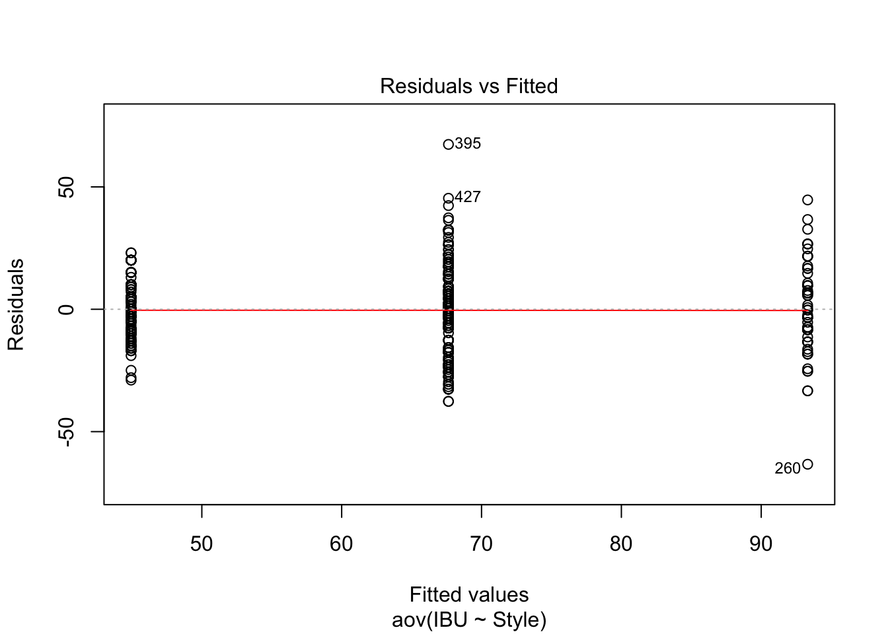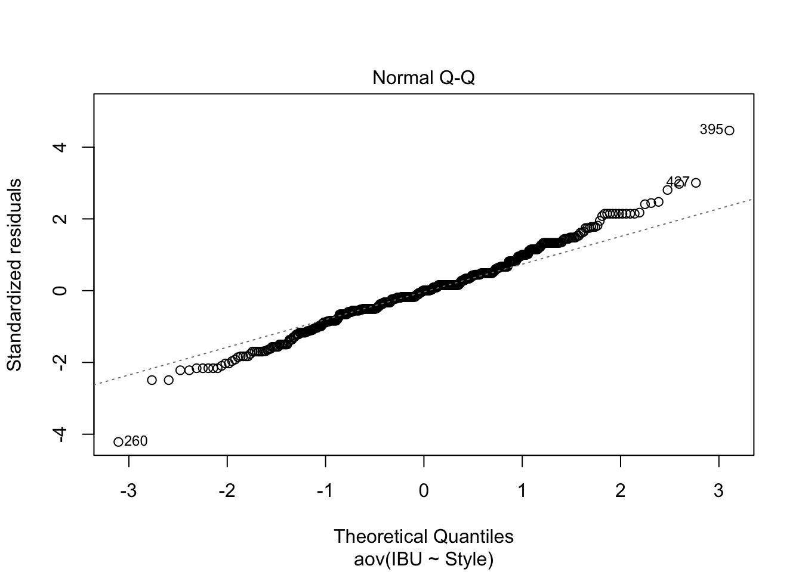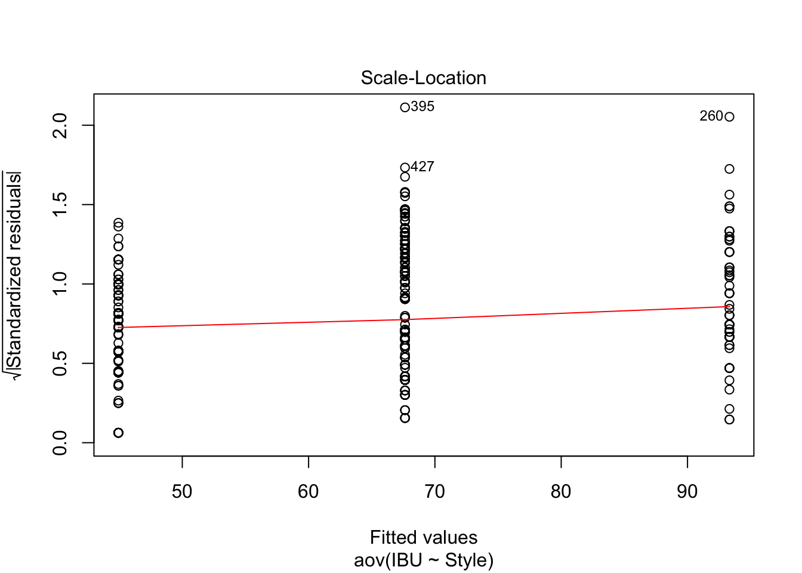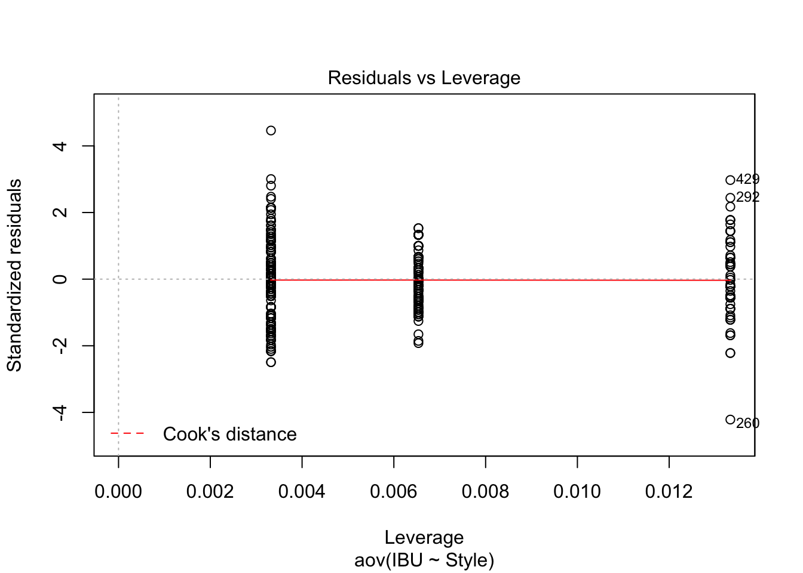
plot(IPAtest_ABV) #for checking assumptions for ANOVA 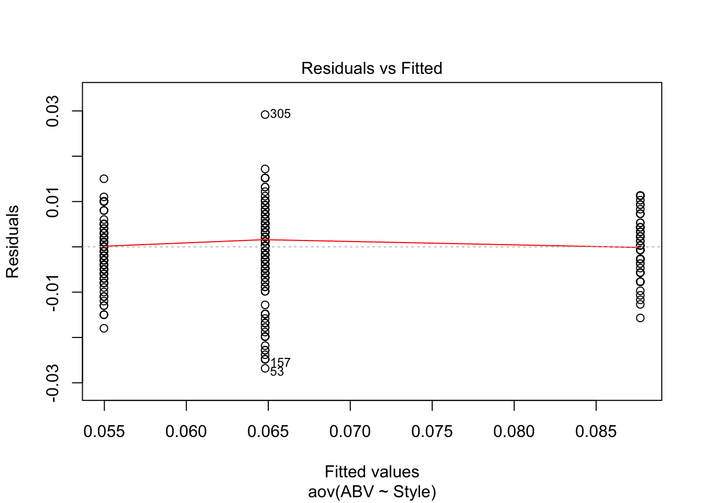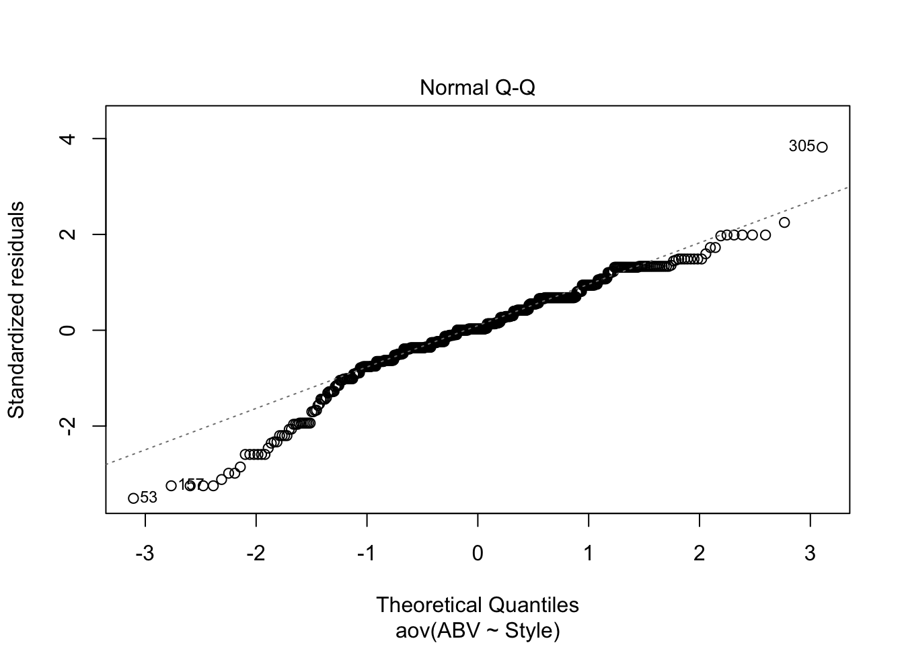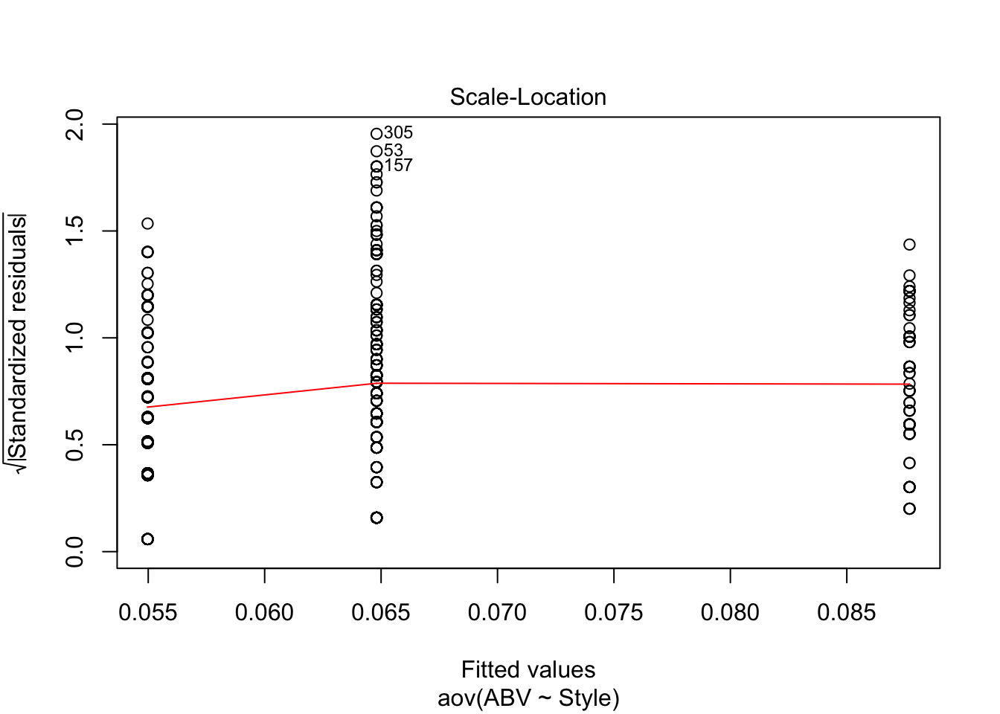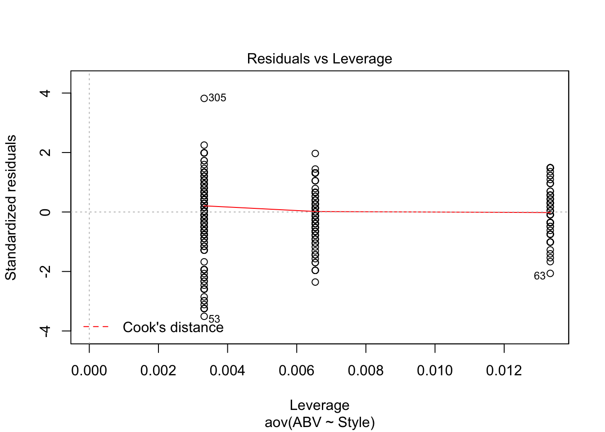